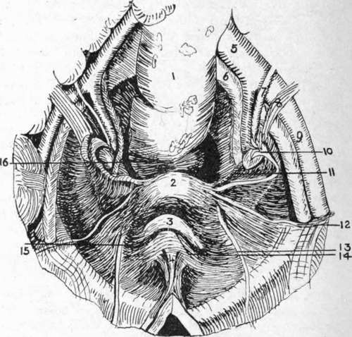

The Vagina
Description
This section is from the book "Surgical Anatomy", by John A. C. MacEwen. Also available from Amazon: Surgical Anatomy.
The Vagina
The Vagina leading from the cervix to the vulva is about 3 inches long, and is partially occluded at its lower extremity in nulliparae by a fold of mucous membrane called the hymen It is directed downwards and forwards, is slightly curved with the convexity backwards, and is related in front to the bladder and urethra, and to Douglas's pouch and rectum behind. It will be remembered that the cervix uteri is in-vaginated into the vagina, and the mucous membrane being reflected from the one to the other forms vaginal fornices, or recesses, anterior, posterior, and lateral. In nulliparae the mucous membrane is thrown into transverse folds-vaginal riigce. These frequently make it difficult to remove pyogenic infection (e.g., gonorrhoea), and by direct extension, endometritis may follow vaginitis. Owing to the angularity of the junction of uterus and vagina, the vagina lying almost parallel to the pelvic brim, the anterior vaginal wall only measures a little over 2 inches, whereas the posterior measures 3 inches. In front the vagina is but loosely attached to the trigonal area of the bladder, but is firmly connected with the urethra. Vaginal cystotomy or urethrotomy is sometimes performed through this anterior wall. Posteriorly, it is only separated from the rectal ampulla by a thin layer of connective tissue (recto-vaginal septum), but lower down it is considerably separated from the anal canal by a dense mass of connective and fatty tissue called the perineal body. Laterally, it is related to the parametrium, vaginal plexus of veins, ureter, and levator ani muscle. Occasionally, by yielding of some portion of the vaginal wall, a protrusion of bladder, rectum or small intestine may occur into the vagina, producing a vaginal cystocele, rectocele or enterocele, and vaginal wounds have opened into the peritoneal cavity, allowing the escape of small intestine. The vaginal wall may be evaginated for examination by a finger in the rectum. Vesico-vaginal and recto-vaginal fistulce occur not infrequently, owing to the thinness of the vaginal walls. The vaginal walls are very vascular and dilatable, as is evidenced at the puerperium and in cases of retained menses. The narrowest part is the vaginal outlet, surrounded by the sphincter vaginae muscle, and here laceration frequently occurs. A spasmodic contraction of the sphincter muscle-vaginismus-is sometimes met with. The vagina is supplied by branches of the vesicovaginal artery of the anterior division of the internal iliac artery, and vaginal branches of the uterine and middle haemor-rhoidal arteries, and branches of the internal pudic. The ve ns form a plexus round the vagina, and drain into the tributaries of the internal iliac. The lymphatics from the upper part join the internal iliac group, and those from the lower part join the superficial inguinal glands. The nerves are derived from the third and fourth sacral and uterovaginal and vesical plexuses.
Fig. 34.-View of Female Pelvic Basin from Above.
(After Testut.)
1. | Rectum. | 7. | Ureter. | 12. | Round ligament. |
2. | Uterus. | 8. | Uterine vessels. | 13. | Obliterated hypogastric artery. |
3. | Bladder. | 9. | External iliac artery. | ||
4. | Urachus. | 10. | Fallopian tube and ovary. | M- | Plica transversa vesica;. |
5. | Common iliac artery. | 11. | Lower margin of broad ligament. | 15. | Paravesical fossa. |
6. | Common iliac vein. | 16. | Pararectal fossa. |
The Mullerian ducts of the embryo unite at a very early period at their lower extremities to form the vagina and uterus, while their upper extremities, which open into the peritoneal cavity, form the Fallopian tubes. From imperfect fusion of these ducts a double uterus (uterus bicornis) may arise, while, if the condition extend to the vagina, a septum may present, partially dividing the vagina into two compartments.
The broad ligaments form a transverse partition of the pelvic basin, inclined forwards at their uterine, but more vertically at their pelvic extremities, and contain between their layers ovary, ovarian ligament. Fallopian tube, round ligament, uterine, and ovarian vessels, nerves, and lymphatics, parametrium (consisting of muscular and fatty connective tissue), and vestigial remains. Quadrilateral in outline, the inner border is attached to the uterine body, supravaginal cervix, and lateral vaginal fornix; the outer border is attached to the pelvic wall, extending from the external iliac vessels and inner border of the psoas above, to the pelvic floor below, crossing the obturator fossa in its course. The upper border is free, and corresponds to the Fallopian tube in the greater part of its course, and the lower, narrow border is separated from the pelvic floor by connective tissue, containing ureter and uterine veins. The anterior surface, directed downwards and forwards, overlies the bladder ; the posterior surface is related to the intestine.
Occupying the upper border of the ligament, the Fallopian tube runs upwards and outwards and, arching round, ends in the fimbriated extremity which is attached to the upper pole of the ovary by one long fimbria-the ovarian fimbria. The tube is over 4 inches long, and its canal is very narrow, averaging ¼ inch in diameter. The portion immediately beyond the uterine wall is called the isthmus, and the remainder the ampulla. It opens at its fimbriated extremity into the peritoneal cavity by a funnel-shaped expansion called the infundibulum, 1/5 inch wide, which lodges the abdominal ostium 1/12 inch in diameter ; and into the uterus at its upper and outer part by a minute orifice inch in diameter. The two openings are called the abdominal and uterine ostia, and thus the tube provides a direct communication between the peritoneal cavity and that of the uterus. The broad ligament surrounding the tube is frequently called the mesosalpinx, and both tube and mesosalpinx are frequently folded back over the upper extremity of the ovary, forming a recess, which has been called the bursa ovarii. Beyond the fimbriated extremity of the tube, a triangular process of the peritoneum of the upper border of the broad ligament runs up to the external iliac vessels, and encloses the ovarian vessels, nerves, and lymphatics. This process is called the suspensory ligament of the ovary.
Salpingitis, or inflammation of the tube, is due to infection travelling to it from the uterus-frequently gonorrhoeal. In such oases the abdominal ostium may become sealed by adhesions, and the tube, dilated with pus, presents a sausage-like swelling (pyosalpinx). The tube may also become distended with clear fluid (hydrosalpingitis) in catarrhal conditions, or with blood (hcemosalpingitis). On the other hand, infective matter may escape into the peritoneal cavity, causing a pelvic peritonitis. Such peritonitis generally remains localized by many adhesions to surrounding parts. Where the ovum after impregnation becomes fixed in the tube, a tubal pregnancy occurs, the tube generally rupturing between the seventh and twelfth week, and frequently causing fatal haemorrhage. The tortuous condition of the tube and the folds of its mucous membrane may be causes of obstruction to the passage of the ovum.
Continue to: